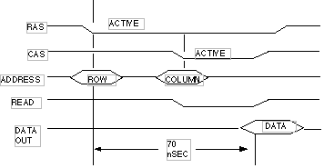
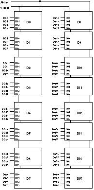
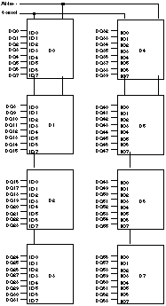
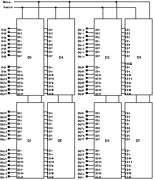

Legacy Document
Important: This document is part of the Legacy section of the ADC Reference Library. This information should not be used for new development.
Current information on this Reference Library topic can be found here:
ADC Home > Reference Library > Technical Notes > Legacy Documents > Hardware & Drivers >
Important: This document is part of the Legacy section of the ADC Reference Library. This information should not be used for new development.
Current information on this Reference Library topic can be found here:
|
Some Frequently Asked Questions (FAQs)Why has Apple transitioned memory expansion from 72-pin SIMMs to 168-pin DIMMs for PowerMac computers?New Macintosh computers incorporating DIMMs provide a number of key advantages for an ever-increasing RAM footprint and memory-hungry applications (e.g., in multimedia development):
Why do SIMMs need to be installed in complementary pairs, when DIMMs can be added on a per module basis?The reason is because of differences in the "width" of the data bus. On SIMMs, the data bus is 32 bits wide while the data bus on DIMMs is 64 bits wide. To span the PowerPC 64-bit data bus, SIMMs need to be installed in complimentary pairs (i.e., in parallel). DIMMs, with their 64-bit data bus, can be installed individually in second generation Power Macintosh computers. The only exception to this are some entry-levels Power Macintosh computers, such as the Power Macintosh 5200/75 LC, which incorporate a PowerPC 603 processor configured with a 32-bit bus. In such computers, SIMMs are used for memory expansion and not installed in identical pairs. How does the PowerPC address memory?PowerPC microprocessors are 32-bit processors that have 4 Gbytes of address space. This means that the processor instructions are encoded in 32 bits, and that they can address or access 4 Gbytes of data. Figure 1 illustrates a 32-bit address bus and a 64-bit data bus. Although the PowerPC has 4G of address space, only a portion of the 4G is allocated for main memory (DRAM memory). For example, the total RAM expansion on entry-level Macs can be as much as 136 Mbytes, while RAM expansion on Power Mac 9500 can be as much as 1.5G. The remaining portion of the address space is allocated for system ROM, PCI cards, system control, etc.
Data is transferred between the PowerPC and main memory via the 64-bit data bus by memory reads or memory writes. There are two types of memory transactions: single -and four-beat transfers. A single-beat memory transaction reads or writes between one to 8 bytes of data. (Equating 8 bytes to 64 bits and noting that the data bus is 64 bits wide, the PowerPC can read or write eight bytes in a single memory operation.) A four-beat memory transaction reads or writes a cache block of 32 bytes to or from memory. Each of the four beats encompasses 8 bytes. What's important to understand is that the memory bus is 64 bits wide and up to 8 bytes can be transferred in a single memory operation. What is memory interleaving and what advantage does it provide?Even though the system data bus is 64 bits wide, the memory controller in Power Macintosh 7500, 7600, 8500, and 9500 computers can support 128-bit data read and write operations by interleaving data between corresponding DIMMS. Memory interleaving provides higher bandwidth (MBytes per second) between the PowerPC microprocessor and main memory. It also provides a significant performance boost, increasing the execution speed of memory-intensive programs. How much faster depends on the program's software architecture and whether an L2 cache is present. How is memory interleaving enabled?Memory interleaving is a function of the memory controller used in Power Macintosh 7500, 7600, 8500, and 9500 computers. Memory interleaving is enabled by the power-up software when it detects two DIMMs in corresponding expansion slots (e.g., A1 and B1, A2 and B2, etc.) that are the same density, have the same memory bank configuration, and have the same DRAM addressing modes. For addressing mode information, refer to the appropriate Developer Notes on the Developer CD Reference Library Edition. What speed SIMMs and DIMMs are required for PowerMac computers?The access time of DRAMs used to expand memory on most PowerMac computers are 80 nsec, 70 nsec, and faster, as we move into the future. Always be sure to check memory expansion specifications for your particular computer before making a purchase. Can faster speed memory modules be used in Power Macintosh computers and will they increase system performance, i.e., 60 nsec instead of 70 nsec modules for a performance increase of 10 - 15 percent?Faster speed memory modules will most likely work fine in Power Macintosh computers, i.e., 60 nsec instead of 70 nsec modules. This will not increase CPU performance, however. The PowerPC processor will not access memory any faster with faster memory module speed, since PowerMacs do not use memory module speed sense lines.
Address Cycles and Access Timing Using an example of a 4M x 4 (16 MBit, 11/11) DRAM device, Figure 2 illustrates a basic timing diagram of how the device is addressed for a typical read cycle. Addressing a 4M address space requires 22 address inputs. DRAM devices have their address inputs multiplexed by row and column addresses (in this example: 11 row and 11 column addresses, noted by "11/11"). The memory controller delivers the row and column address at different times, and drives signals referred to as RAS and CAS to strobe in the respective addresses. Note that the access time from the beginning of the address cycle to valid data out (measured from RAS) is 70 nsec. DRAM access time directly correlates to the speed specification for SIMM and DIMM memory modules; 60, 70, and 80 nsec are common speeds required by today's typical Macintosh and PC CPUs. Access time is specified as a maximum value.  Can different speed memory modules be intermixed, i.e., 60 and 70 nsec modules in a PowerMac that is specified at 70 nsec?As long as memory modules speeds are equal to or less than the PowerMac specified memory speed, installing different speed modules should have no impact on the PowerMac's functionality. What does refresh rate or count refer to (e.g., 1K, 2K, or 4K)?The term "4K refresh," for example, refers to the number of refresh cycles required to refresh all sections of the memory array and is determined by the number of row addresses. (12 addresses will address 4096, or 4K, locations. Similarly, 11 addresses will address 2048, or 2K, locations.) Data stored in DRAM devices is volatile. To maintain data integrity, DRAM requires a power source and continuous refreshing. DRAMs are specified at different refresh rates that may or may not be compatible with a particular PC model. Macintosh computers are compatible with widely available DRAM devices. Table 1 lists three common 16 MBit DRAM devices used to construct SIMMs or DIMMs. Table 1. Refresh vs. addressing
Table 1 shows that 4M x 4 devices come in 4K and 2K refresh rates, with 12/10 and 11/11 addressing, respectively. Addressing notation refers to a matrix array organization where 4K refresh devices (12/10) have 12 row addresses and 10 column addresses. Likewise, 2K refresh devices (11/11) have 11 row addresses and 11 column addresses. Both modes (12/10 & 11/11) have 22 address lines (number of column plus row lines) which is required for an address space of 4,194,304 (or 4M) locations, each of which contains a 4-bit word. How do PowerMac computers provide continuous refreshing?The power source and refreshing are provided as long as the computer is powered on. The Memory Controller in Apple Macintosh and Power Macintosh computers generate a CAS before RAS refresh cycle every 15.6 usec. DRAM devices contain an address refresh counter which is triggered by a CAS before RAS memory cycle. A 16 MBit (11/11) device with an 11 row address - referred to as a 2K refresh part - requires all row address combinations (2048) to be accessed every 32 msec. A 4K refresh device (12/10) requires 64 msec to refresh all row addresses. DRAM row addresses are refreshed by the Refresh Address Counter, which is triggered by a CAS before RAS refresh cycle. The importance, therefore, lies less in whether or not a Macintosh CPU supports 1K, 2K, and/or 4K refresh DRAM parts than whether the Macintosh Memory Controller and DRAM devices have compatible addressing schemes, and whether the DRAM devices are compatible with CAS before RAS refresh cycles every 15.6 usec. For further details, refer to the appropriate Developer Note for the particular CPU. How are different sized SIMMs and DIMMs -- 16 Mbytes, 32 Mbytes, etc. -- designed with different types of DRAM devices, such as 4M x 4, 2M x 8, and 1M x 16 parts?Figures 3, 4, and 5 provide three examples of DIMM modules designed using 4M x 4, 2M x 8, and 1M x 16 devices. These examples are intended to show how DIMMs are logically mapped out with different DRAM devices - not to show a detailed electrical schematic and/or specification. For design guidelines, refer to the JEDEC Standard 21-C and Apple Developer Notes for a particular CPU. Remembering that DIMMs and SIMMs have a 64-bit and 32-bit wide data bus, respectively, the following examples can be applied to SIMM modules by using half the number of devices to span 32 bits. Figure 3 shows a 32 Mbyte DIMM using 4M x 4 devices in a single bank design. SIMM and DIMM memory modules accommodate one or two memory banks. Two bank modules will be discussed later. When examining the layout shown in Figure 3, note the following:
 Figure 4 shows a 16 Mbyte DIMM using 2M x 8 devices in a single bank. You may be asking yourself: if both 4M x 4 and 2M x 8 parts are considered 16 Mbit devices and both examples are single bank designs, why is Figure 3's design 32 Mbytes and Figure 4's design 16 Mbytes? Since the data path of a 2M x 8 device is 8 bits wide, rather than 4 bits wide -- as for 4M x 4 parts -- it requires half the number of devices to span across 64 bits.
 Figure 5 shows a 16 Mbyte DIMM using 1M x 16 devices in a two bank design. What's important to note for this particular design is the following:
In this example, there are two 1M x 64 banks, resulting in a module density of 2M x 64 or 16 Mbytes.  Do Macintosh computers support composite memory modules?No. Apple defines a composite memory module as one that loads the data bus with more than one DRAM input load per bank. Both SIMM and DIMM can accommodate a maximum of two memory banks per module. Can memory modules with different refresh rates or counts be intermixed?For first generation Power Macintosh computers that require SIMMs to be installed in pairs, the two SIMMs within a pair need to be identical. Other pairs can have different supported refresh rates. DIMMs with different supported refresh rates can be intermixed. But if it's intended to enable memory interleaving, DIMMs with different refresh rates may or may not have DRAM devices with same addressing modes.
What is EDO memory and do Macintosh computers support it?EDO (Extended Data Out -- sometimes called hyperpage) memory are DRAM devices that improve access timing by extending its data out timing while allowing the memory controller to address the next column address. Although EDO devices will improve timing efficiency to main memory by approximately 10%, it does not necessarily mean programs will execute 10% faster; much of the time the CPU fetches instructions and data from cached memory, i.e., L1 cache within the PowerPC microprocessor and or L2 cache on the mother board. EDO DRAM is a superset of conventional (also called Fast Page Mode) DRAM. This means that an EDO DRAM can be used in place of a Fast Page Mode DRAM, although unless the memory controller is designed to utilize the faster EDO timing, the memory performance will be the same as Fast Page Mode. Power Macintosh computers do not yet support the extended data out timing that EDO DRAM devices can provide. If memory modules with EDO DRAM are designed to be fully compatible with standard Fast Page Mode DRAM, however, they should function properly. (Be sure to check with the SIMM or DIMM manufacturer and specify the Macintosh model.) In the future, PowerMacs will support the extended data out timing, taking full advantage of EDO DRAM devices. What is parity memory and do Power Macintosh computers support it?If a computer is designed for parity RAM, the parity bit allows the memory controller to check for DRAM errors in the form of a parity error. A parity error cannot correct system errors, but the system can be designed to alert the user that a memory error has occurred. Apple's newly introduced Network Server 500 and 700 products are the only computers that support parity memory; all other Power Macintosh Desktop, Tower, and PowerBook computers do not. Parity memory modules add one parity bit to each byte. Thus, a 64-bit DIMM -- eight bytes -- expands from 64 bits to 72 bits wide. What is ECC memory and do Macintosh computers support it?Macintosh computers do not support ECC memory. ECC (Error Correction Coding) memory has additional check bits for each byte. This entails the memory controller calculating and writing error control check bits on each memory write operation, and recalculating and comparing the check bits on memory read operations, and then if necessary correcting the bad bits. As opposed to parity, this can automatically correct single-bit RAM errors. Commonly Used Terms and AbbreviationsMbytes GBytes 32 bits 64 bits 1M x 16 2M x 8 4M x 4 usec msec nsec memory modules first generation Power Macintosh second generation Power Macintosh CAS RAS ReferencesDeveloper Notes for specific Macintosh models and JEDEC Standard 21-C Downloadables
|
|